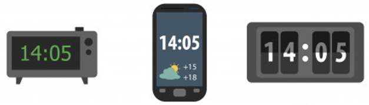
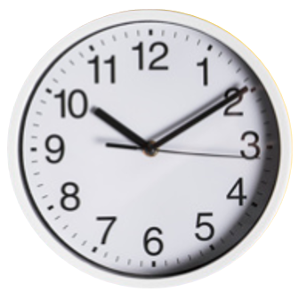
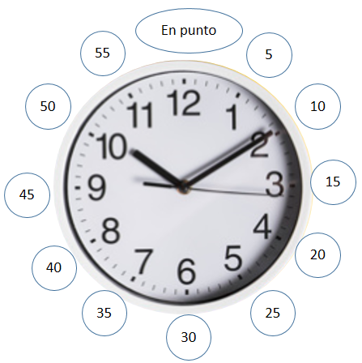
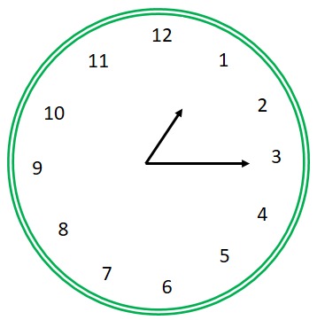
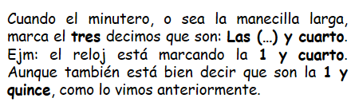
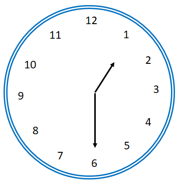
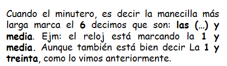
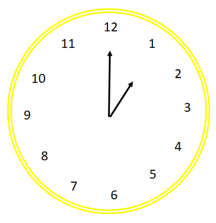
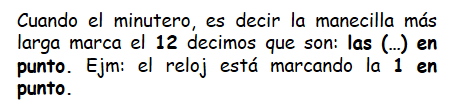
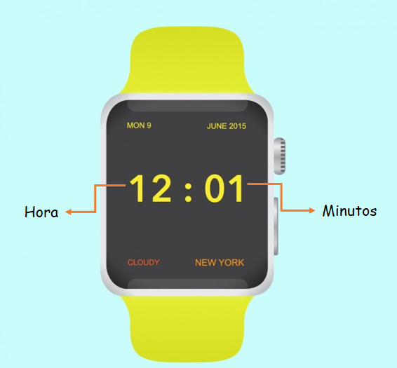

El reloj
En este capitulo aprenderás todo sobre el reloj.
¿Qué es un reloj y para qué nos sirve?
El reloj es un instrumento que nos sirve para medir el tiempo y ubicarnos en él de forma precisa y conectada, sin importar en donde nos encontremos.
Existen diferentes tipos de reloj y a lo largo de la historia estos artefactos han ido cambiando y se han ido ajustando a las necesidades de los seres humanos. El ser humano ha usado a lo largo del tiempo diferentes formas de medir el tiempo, ya fuera observando el movimiento del sol, de la luna o de las estrellas. Todas estas formas han ido siendo superadas por instrumentos más exactos como el reloj que conocemos actualmente.
- Lo que aprenderemos sobre el reloj:
- Tipos de reloj: Análogico y digital
- Cómo está compuesto el reloj
- Cómo leer la hora
(1)Tipos de reloj:
1. Reloj digital: Son aquellos relojes que sólo nos muestran números en su pantalla.
Observa:
2. Reloj analógico: Son aquellos relojes construidos con manecillas y números.
Observa:
(2)¿Cómo está compuesto el reloj?
El reloj está compuesto por:
- Manecillas
- Horario (la manecilla más corta)
- Minutero (la manecilla más larga)
- Segundero (la manecilla más delgada)
- Números
- Hora
- Minutos
(3)¿Cómo leer la hora?
1. Para leer la hora en el reloj analógico:
Antes de leer la hora en un reloj debes saber que el tiempo tiene muchas formas de medirse, y entre esas formas encontramos algunas unidades básicas como los minutos, los segundos y la hora.
La hora es mayor que los minutos.
Los minutos son mayores que los segundos.
Cuándo quieres ver la hora en un reloj analógico debes fijarte muy bien en las manecillas.
Regla:
La manecilla más larga siempre marca los minutos.
La manecilla más corta siempre marca la hora.
La manecilla más delgada siempre marca los segundos.
Si te fijas muy bien en el movimiento del reloj encontrarás que la manecilla que más rápido se mueve es la que marca los segundos, la manecilla que también es veloz pero no tanto es la manecilla que marca los minutos y la manecilla que parece inmóvil es la manecilla que marca la hora que se mueve muy lento.
Para leer la hora vamos a darte el siguiente tip:
“Los minutos se van a contar de 5 en 5 iniciando desde el número 1 que aparece en el reloj.”
Observa:
Como puedes observar el reloj está marcando las 10:10, porque la manecilla pequeña está en el número 10 y la grande está en el dos que equivale a 10. Decimos entonces: son las diez horas con diez minutos.
“Recuerda que los números de afuera se leen sólo con los minutos no con la hora.”
Hay algunas formas de leer algunas horas que estaría bien que te las aprendieras.
Observa:
     2. Para leer la hora en el reloj digital:
Sólo debes leer los números que en él aparecen. Los dos primeros números antes de los dos puntos indican la hora y los dos números después de los dos puntos indican los minutos.
Observa:
El reloj indica que son las 12 horas con 1 minuto.
